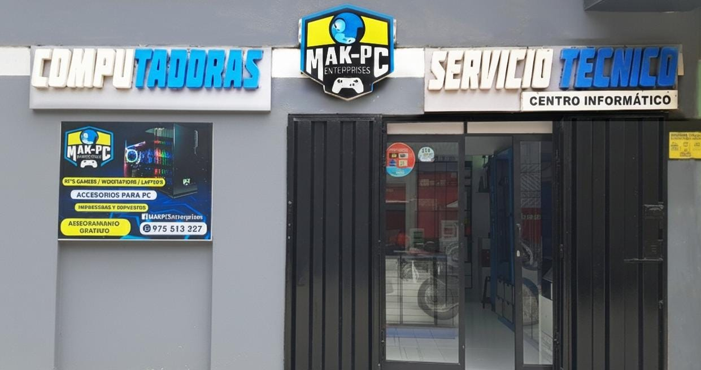

Tienda
Te ofrecemos una alta variedad de productos tecnológicos de alta gama, de manera accesible. Aprovecha ofertas visitando nuestra tienda web.... ¡No pierdas esta gran oportunidad! !VISITA NUESTRA TIENDA ONLINE!
 Horario de Atención
Horario de Atención
Conocenos más
Reseña Histórica
MAK-PC nació con la visión de brindar soluciones tecnológicas confiables y accesibles a un mercado en constante evolución. Desde nuestros inicios, nos hemos enfocado en ofrecer servicios de soporte técnico de calidad y una amplia gama de repuestos para computadoras, convirtiéndonos en un referente para quienes buscan mantener sus equipos en óptimas condiciones.
Misión
En MAK-PC, nuestra misión es proporcionar soluciones tecnológicas confiables, eficientes y accesibles que impulsen el desarrollo y la productividad de nuestros clientes. Nos dedicamos a garantizar el óptimo funcionamiento de los equipos informáticos a través de servicios de soporte técnico de calidad y la oferta de repuestos de alta gama.
Visión
En MAK-PC, aspiramos a ser líderes en el sector tecnológico, reconocidos por nuestra excelencia en soporte técnico y por ofrecer soluciones innovadoras que superen las expectativas de nuestros clientes. Nos visualizamos como una empresa en constante crecimiento, adaptándonos a los avances tecnológicos y contribuyendo al desarrollo de hogares y negocios al proporcionar servicios y productos que faciliten su vida digital.
- Servicio técnico especializado para garantizar el óptimo funcionamiento de tus equipos informáticos.
- Venta de repuestos originales,accesorios y componentes de alta calidad para equipos de diversas marcas.
- Mantenimiento preventivo y correctivo enfocado en prolongar la vida útil de tus equipos.
- Asesoramiento personalizado que te ayuda a tomar decisiones informadas.
Objetivo
Nuestro objetivo es ampliar nuestra cobertura en la región, fortalecer los convenios con instituciones educativas, impulsar la digitalización en hogares y empresas, y consolidarnos como aliados estratégicos en soluciones tecnológicas. Buscamos contribuir al desarrollo de la comunidad ofreciendo productos innovadores, servicios especializados y atención personalizada que generen confianza y valor duradero.
Servicios
En MAK-PC, nos especializamos en brindar soluciones tecnológicas integrales que incluyen:
Soporte técnico experto
Resolvemos cualquier problema y mantenemos tus equipos siempre al máximo rendimiento.
Venta de repuestos originales y componentes premium
Para todas las marcas: calidad y garantía aseguradas.

Mantenimiento preventivo y correctivo
Extiende la vida útil de tus dispositivos y evita fallas inesperadas.
Asesoría personalizada
Elige la mejor solución tecnológica según tus necesidades y presupuesto.
Convenios
Estamos comprometidos con la capacitación de la juventud, estableciendo convenios con diversas instituciones de estudio de la región para fomentar el aprendizaje y el desarrollo en tecnología.
Nuestros datos
Razón Social: MAK PC S.A.C.
RUC: 20409456520
Tipo de Empresa: Sociedad Anonima Cerrada
Dirección: Cal. Simon Bolivar Nro. 461 Int. 001
Teléfono: +51 975 513 327
Departamento: Tumbes, Perú
Estado Domicilio: Habido
CIIU: 72909